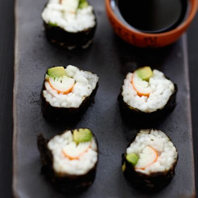

Sushi Recipe

Description
The word sushi 寿司 refers to a Japanese dish consisting of vinegared rice called shari assembled with other ingredients called neta which are usually raw fish and seafood . It can also be vegetables and mushrooms.
Ingredients
- Sushi Rice
- Fresh Fish
- Seaweed Sheets (Nori)
- Rice vinegar
Steps
- Cook sushi rice.
- Season the sushi rice with rice vinegar.
- Place a sheet of seaweed on a clean fat surface.
- Spread the rice on the sheet and then slices of fish.
- Roll the sushi tightly.
- Cut the sushi roll.
- Enjoy !